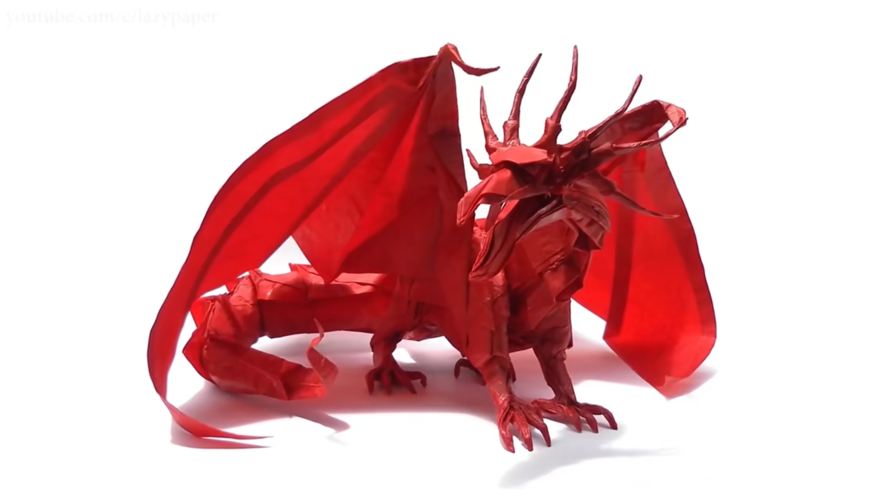

<-|返回主页
网站收集
折纸鉴赏
phigros
个人介绍
折纸鉴赏
折纸，是一门历史悠久的艺术。尽管起源无从考证，但可以确定，其历史以绵延千年。

古代龙，神谷哲史
它也是一门极简的艺术。再复杂的折纸作品，所需的只是一张纸，再加上耐心与时间。
五重四面体
传统折纸是简约朴素的，如千纸鹤。而现代多样的手法为折纸注入了新的生命力。
狼，小松英夫
折纸艺术在近代还与自然科学走到了一起。几何、建筑都与折纸有关。事实上，折纸的过程是一种拓扑变换，却能创造出如此精美的艺术品。